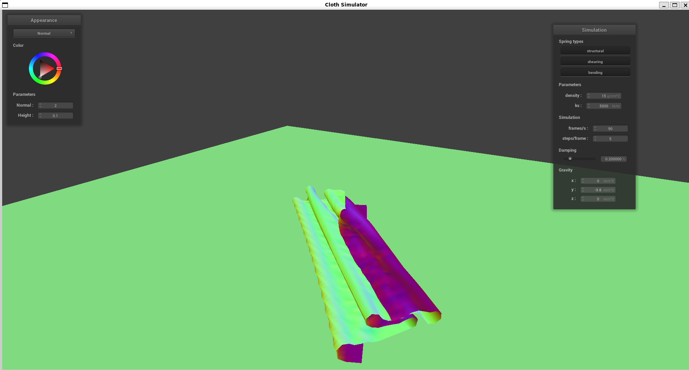

CS184/284A Spring 2025 Homework 4 Write-Up
Names: Alper Gel
Link to webpage:
https://cal-cs184-student.github.io/hw-webpages-alper-test/hw4/index.html
Link to GitHub repository:
https://github.com/cal-cs184-student/sp25-hw4-alper-hw4
Overview
Overall, this project allowed me to build a cloth simulation graphical environment starting from the cloth's physics properties, to how to propogate each simulation step informed off physics properties. I really enjoyed the shaders part, and really like the custom shader I was able to make, overall really fun project compared to project 3!
Part 1: Masses and springs
Below are two images of scene/pinned2.json
|
Pinned2 Screenshot 1, Zoomed Out.
|
Pinned2 Screenshot 2,Zoomed In.
|
Comparison of Activated Constraints
|
No Shear Springs
|
Only Shear Springs
|
All Springs Activated
|
Part 2: Simulation via numerical integration
Comparison of Density Changes with Baseline
Observations: Increasing density increases the amplitude and visibility of folds in the cloth as can be seen below
|
Baseline
|
Low Density
|
High Density
|
Comparison of KS Changes with Baseline
Observations: Lowering KS collapses the top fold, and makes the cloth droop down significantly more than with higher KS.
Comparison of Dampening Changes with Baseline
Observations: Visually looking at the normals, the low/high have flipped parts that are folded, and high dampening added some mild smoothing to the folds.
|
Baseline
|
Low Dampening
|
High Dampening
|
4 Pinned Cloth Output
Baseline parameterscene/pinned4.json at resting state
Part 3: Handling collisions with other objects
Sphere Collision: First we need to calculate the distance between the PM and the sphere origin. If this dist is less than the sphere's radius, we know that the cloth has started a collision event. If there is a collision, we calculate the unit direction vector from the spheres origin to the point masses position. We then project this direction to the spheres surface and find a tangent point (Vector3D tangent_point = origin + unit_dir * radius). This allows us to compute a correction vector from the PM's last position to this tangent point, then we apply it scaled by (1-friction) to the current location of the point mass.
Plane Collision: We calculate the signed distance between the pm and the plane using the plane normal via a dot product. If the distance is negative, that means the pm has clipped into the plane. If so, we project the pm's position onto the plane, with the small offset given. Then we compute a correction vector from the pm's last position to the new projected point, then apply the correction scaled by (1-friction) to update the point masses position onto the plane.
Comparison of ks value changes for sphere intersection
Observations: Low ks causes the cloth to drape more form-fitting to the sphere object beneath it, while high ks allows the cloth to maintain some rigid structure, and it sticks out.
|
Baseline, ks=5000
|
Low, ks=500
|
High, ks=50000
|
Comparison of ks value changes for sphere intersection
|
Cloth on plane, normal
|
Cloth on plane, wireframe
|
Part 4: Handling self-collisions
Description of Implementation: We first build a spatial hash map by calculating a unique hash value based on the point mass's 3D position, essentially gridding up the entire 3D space into a spatial hash map. If a hash location doesnt already exist in the hash map, we create a vector and populate the vector. In the simulate function we check for self collisions by building the spatial map once per simulation step, then calling the self_collide function on each existing point mass. Inside the self_collide function, we find the hash value of the point mass, retrieve all other point masses in the SAME spatial cell. As noted on ed, we could check neighboring spatial cells for a better approach but we dont for simplicity of the assignment. Then, for each potential collision "candidate" we check if the candidate is the same point mass, if so skip. If not, we get the distance between the candidate and the point mass. If the dist is less than twice the cloth thickness, we have an intersection. If so, we get a correction vector that pushes the PM's apart, and we apply that correction proportionally.
Comparison of progression of cloth falling with default values
|
Early in simulation process
|
Close to midway
|

At rest
|
Comparison of low vs high ks value
Comparison of low vs high density value
Part 5: Shaders
What is a shader program?
A shader program is a set of instructions that run on the GPU rather than the CPU. These are programs that are written in shader-specific languages like GLSL like we used here. Overall, they determine how 3D models are processed and rendered to the screen in terms of illumination and different visible effects. Vertex Shaders (.vert) pose as the first "programmable" stage in the overall rendering pipeling. They process the individual verices, transform them to screen space, then pass along vert attributes like normals and colors to the later stages of the rendering pipeline. On the otherhand, the fragment shader (.frag) process individual fragments from the rendering pipeline that we covered in class. These fragments determine the final color of each pixel, and fragment shaders handle lighing calculations, tex sampling, and configuration of material properties. We see important lighting effects like reflection here (Mirror.frag)!
What is the Blinn-Phong shading model?
The Blinn-phong shading model is an illumination model that calculates how light interacts with surfaces via three discrete components: Ambient, Diffuse, and Specular. The final color output is a linear sum of these three components. The ambient term represents indirect light that bounced around the env, and is a form of equal illumination. The diffuse term simulates light that scatters equally in all directions when hitting a surface that looks matte (hemisphere scattering). The specular component creates shiny points on surfaces like polished metal, gives the "shiny" and reflective feeling.
Comparison of Blinn Phong Shader Components (Images)
|
Ambient
|
Diffuse
|
|
Specular
|
Full Blinn-Phong
|
Custom Texture Image (Find Oski!)
Texture Image
Bump Mapping
Comparison of Bump Mapping Methods(Images)
Comparison of methods: In the .vert file, for bump mapping we only pass the vertex data through without any modification, but in displacement, we move the vertices along their normal direction based on the height map. This makes it so that displacement only looks right when putting in the height and normal values suggested in the specs page. Both fragment shaders are about the same, they both use normal pertubation using the dU, dV equation provided in the specs, and the same Blinn-Phong lighting model used earlier for the phong shader.
Comparison of Coarseness
|
Bump Coarse 16
|
Displacement Coarse 16
|
|
Bump Coarse 128
|
Displacement Coarse 128
|
Mirror Shader
Mirror Shader
EXTRA CREDIT: Custom Shader
For the custom shader, I went for a holographic artifact effect using iridescent properties. Essentially, the plasma helper function combines multiple sine waves to create a plasma graphical effect, then outputs rainbow-like colors that flow across the duration of the surface. For the main function in Custom.frag, view-dependent effects are calculated using a fresnel effect that increases reflection at glancing angles. Then the environment cubemap is utilized and blended based off the fresnel term. The iridescence effect is utilized to create the soap bubble effect that changes as vieweing angle changes, and it is made with phase-shifted sine waves. Finally, the plasma effect is mixed with the iridescent output, environment reflections are added, then only diffuse lighting is added to maintain shape definition, but I opted not to go for full Blinn-Phong implementation since I thought that would overwhelm the viewer too much with the shiny-ness given the already overwhelming holographic effect.